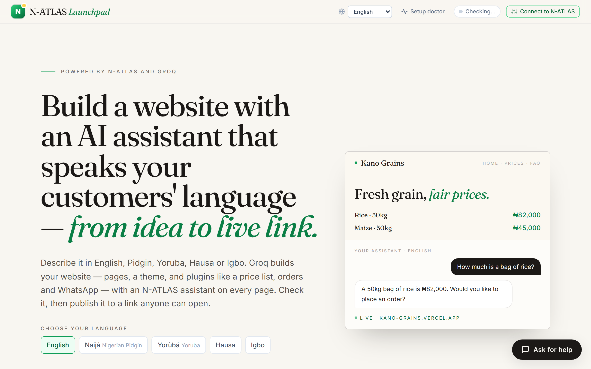
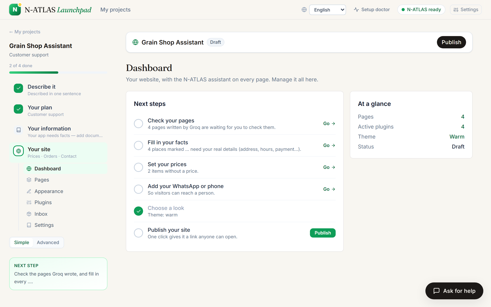
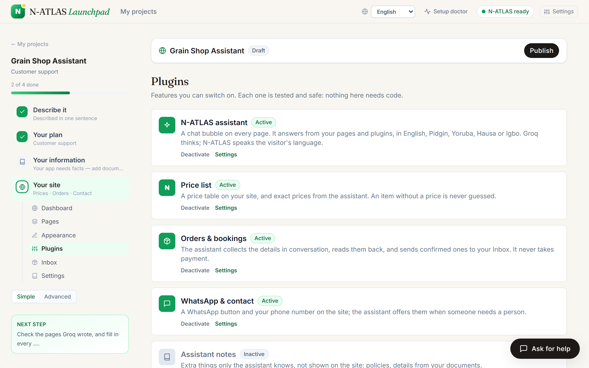
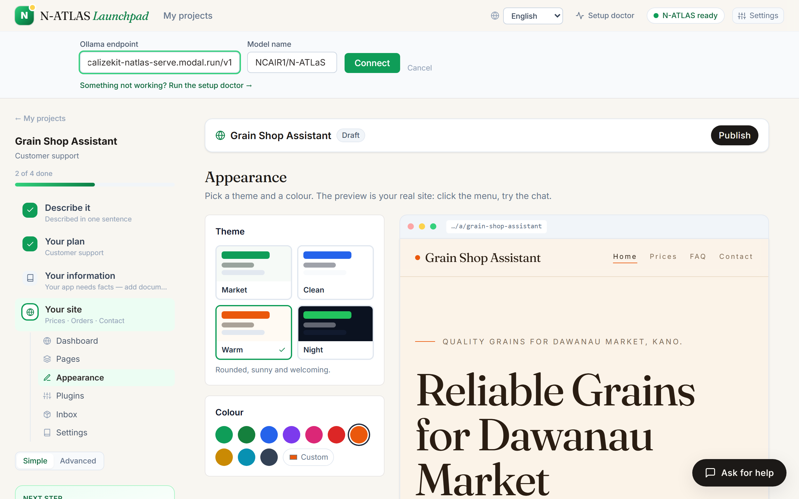
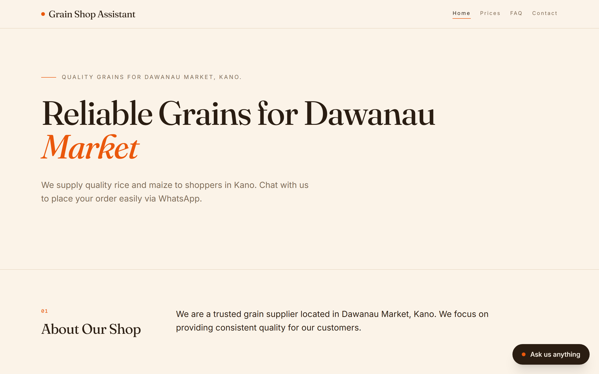

Architecture, setup, deployment and usage of N-ATLAS Launchpad — enough for an independent team to run it, host it and build on it.
Launchpad is the shortest path from an idea, described in a Nigerian language, to something real built on N-ATLAS.
/a/<slug>/api ↓api/index.mjs)
NAtlasProvider; hosting changes are an .env change.Requirements: Node.js 20 or newer (tested on 24), npm, and an N-ATLAS endpoint (section 05). A Groq key is free at console.groq.com.
git clone -b blocks https://github.com/lumpyspace/N-atlas-launchpad.git cd N-atlas-launchpad npm install --prefix backend && npm install --prefix frontend # then fill in NATLAS_* and GROQ_API_KEY: cp backend/.env.example backend/.env # API on http://localhost:8788 npm run dev --prefix backend # app on http://localhost:5174 (it proxies /api to the backend) npm run dev --prefix frontend # proves app → N-ATLAS → reply cd backend && npm run healthcheck
backend/.env)| Variable | Meaning |
|---|---|
NATLAS_PROVIDER | Always http. |
NATLAS_ENDPOINT | Base URL of your OpenAI-compatible N-ATLAS server, e.g. http://localhost:11434/v1 (Ollama) or your Modal/vLLM URL ending in /v1. |
NATLAS_API_KEY | Bearer key for the endpoint (blank for local Ollama). |
NATLAS_MODEL | NCAIR1/N-ATLaS for vLLM; your Ollama tag, e.g. n-atlas. |
NATLAS_REQUEST_TIMEOUT_MS | How long to wait for N-ATLAS (cold starts): 280000 on Vercel. |
NATLAS_REPETITION_PENALTY | 1.12 for vLLM; leave empty for Ollama (its Modelfile sets it). |
GROQ_API_KEY / GROQ_MODEL | The assistant model. Default models, tried in order: openai/gpt-oss-120b, qwen/qwen3.8-27b, openai/gpt-oss-20b. |
GEMINI_API_KEY / GEMINI_MODEL | Optional backup assistant model. |
BRAIN_ORDER / BRAIN_DAILY_LIMIT | Which assistant model first (default groq,gemini); calls per day (default 500). |
UPSTASH_REDIS_REST_URL / _TOKEN | Where published sites live (Upstash Redis REST). Without them a local server uses backend/.data/sites.json. |
SITE_DAILY_LIMIT / PUBLISHES_PER_DAY | Visitor messages per site per day (300); new sites per visitor per day (5). |
LAUNCHPAD_PUBLIC | Public mode — automatic on Vercel: N-ATLAS settings locked, per-IP limits (PUBLIC_PER_MINUTE 20, PUBLIC_PER_HOUR 300). |
COMPARE_MODELS | Optional extra models for the Compare grid (label|model[|endpoint[|KEY_VAR]], separated by ;). |
# 178 tests cd backend && node --import tsx --test ../tests/*.test.ts
They cover the relay's line checks, the brain's provider order and rate limits, site drafting, translation, publishing, the inbox and owner keys, the Upstash store, language detection, the security suite, exports, and that every interface string is translated into all four Nigerian languages.
vercel.json builds the frontend and serves the API from api/index.mjs (one function); routes /a/* to the app.NATLAS_PROVIDER=http, NATLAS_ENDPOINT, NATLAS_MODEL,
NATLAS_API_KEY, NATLAS_REPETITION_PENALTY=1.12, NATLAS_REQUEST_TIMEOUT_MS=280000, GROQ_API_KEY,
UPSTASH_REDIS_REST_URL, UPSTASH_REDIS_REST_TOKEN (and optionally GEMINI_API_KEY). Values are read with quotes or a pasted NAME= forgiven./api/health and /api/sites/status (should say "canPublish": true).pip install modal && modal setup modal secret create natlas-hf HF_TOKEN=<Hugging Face token that accepted the N-ATLaS licence> modal secret create localizekit-natlas NATLAS_API_KEY=<a long random key> # MIN_CONTAINERS=1 modal deploy … keeps one GPU warm modal deploy inference/modal_natlas.py
Then NATLAS_ENDPOINT=https://<workspace>--localizekit-natlas-serve.modal.run/v1, NATLAS_MODEL=NCAIR1/N-ATLaS and the key above.
The script serves the unmodified weights with vLLM on an L4 (24 GB) in BF16 with an 8k context.
Convert the gated weights to GGUF and create the model from inference/Modelfile (steps in inference/README.md),
then NATLAS_ENDPOINT=http://localhost:11434/v1, NATLAS_MODEL=n-atlas. On a CPU expect around a token per second.





| Endpoint | What it does |
|---|---|
GET /api/health | App → N-ATLAS → reply, with latency (cached 60 s on a public server). |
POST /api/blueprint | Description (any of the five languages) → plan: name, use case, system prompt. |
POST /api/blueprint/narrate | The build guide, written by Groq and put into the developer's language by N-ATLAS (streamed). |
POST /api/sites/draft | Plan → draft website (pages, theme, plugins) written by Groq. |
POST /api/sites/translate | A site's words in another language. |
POST /api/sites/write-post | A draft blog post from a topic. |
POST /api/sites/preview | The site's assistant answers, without saving (the admin's test chat). |
POST /api/sites · PUT/DELETE /api/sites/:slug | Publish, update, unpublish (PUT/DELETE need the owner key). |
GET /api/sites/:slug/public · POST /api/sites/:slug/chat | What visitors see; visitors chatting (orders go to the inbox). |
GET /api/sites/:slug/inbox | Orders and messages (owner key). |
POST /api/help/ask | The helper on every page. |
POST /api/generate(/stream) · /api/evaluate · /api/security · /api/improve · /api/compare/stream | Developer tools: playground, test suites, attack suite, hardening, side-by-side models. |
backend/src/ app.ts (wiring, public mode, limits) · routes/ · brain/ · sites/ · blueprint/ · eval/ · security/ · improve/ · providers/ · help/ frontend/src/ screens/ (and screens/site/) · components/ (site/ for the site builder and the public site) · i18n/ (pid, yo, ha, ig) · state/ api/index.mjs the backend as one Vercel function inference/ Modal script, Ollama Modelfiles, serving guide sdk/ JavaScript and Python clients for N-ATLAS scripts/ evidence.mjs, bench.mjs (live evidence) tests/ 178 node:test tests docs/ this documentation, evidence, architecture notes
MIN_CONTAINERS=1 while people are testing./api/sites/status shows it.Launchpad is powered by N-ATLAS (NCAIR and Awarri) and Groq, with Google Gemini as a backup. It is an independent project, not affiliated with NCAIR, Awarri, Groq or Google.